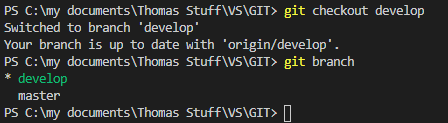
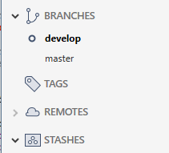

To add/edit content, a local branch must be created first.
If the branch exists (same name) in the remote, it will be 'linked' to that remove branch
git checkout -b
Creates a branch called
Example
To switch branches to 'develop' type:
git checkout develop
Result
VS Code

SourceTree
